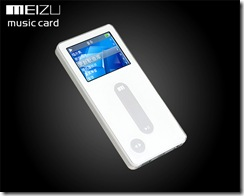

22 juin 2008
Nouveau baladeur : Meizu M3
Il y a quelques jours, j'ai décidé de m'acheter un nouveau baladeur (Mon ancien ? Non je ne vais même pas vous en parler).
Après avoir longuement réfléchi et évité la grosse marque bien chère avec un logo de pomme, ;) j'ai choisi de prendre un Meizu M3 8 Go.


Le Meizu M3 est ce qu'on pourrait appeler un clone de l'iPod Nano car il possède les mêmes fonctionnalités mais il a de nombreux avantages par rapport à l'iPod !!! - Molette verticale - Une prise USB normale (mini B standard) - Fonction Radio (Tuner FM) - Dictaphone - Support MTP (Synchronisation avec logiciels comme Songbird) - Pas besoin de passer par un logiciel pour transférer sa musique - Compatibilité audio - Prix !!! Je tiens à souligner les 3 derniers points : avec un iPod il faut obligatoirement passer par un logiciel pour transférer sa musique et la compatibilité des fichiers est assez limitée : MP3, MP4. Le Meizu M3 est quand à lui très ouvert, pas besoin de logiciel ou alors support MTP et large choix pour les fichiers (MP3, WMA, WMA VBR, WMA LOSSLESS, OGG, WAV, FLAC) Dernière chose, le prix : iPod nano 8 Go : 200 euros Meizu M3 8 Go : 119 dollars soit 76 euros !!! Pour plus d'information sur la bête, je vous invite à lire le test sur GénérationMP3. Je l'ai commandé sur le site MP4 Nation. J'espère le recevoir courant Juillet :) Tout est dit ;)
Commentaires 8